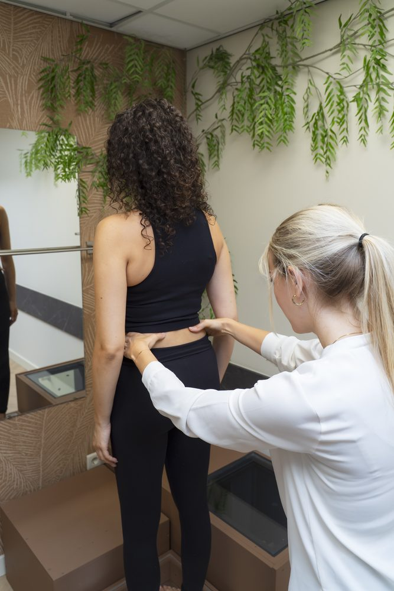
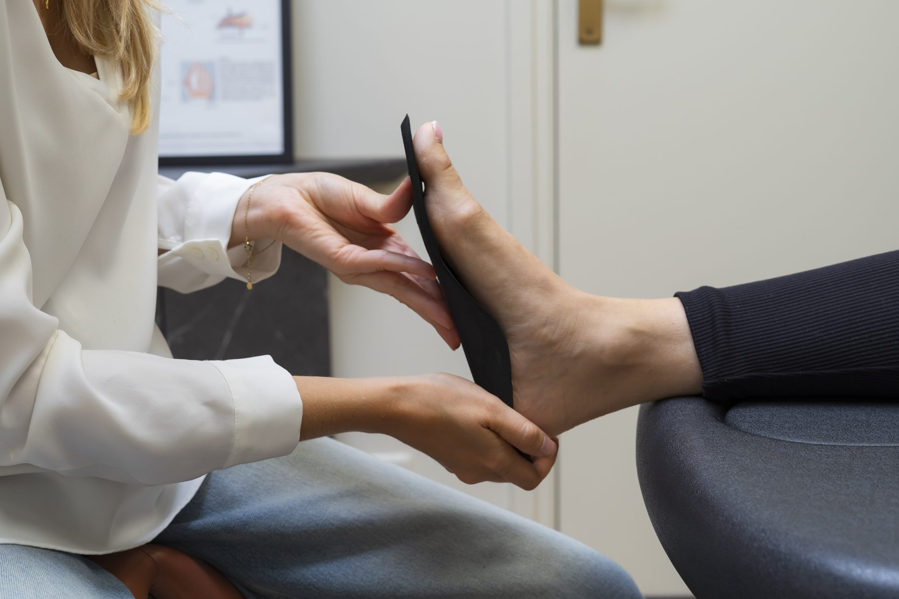
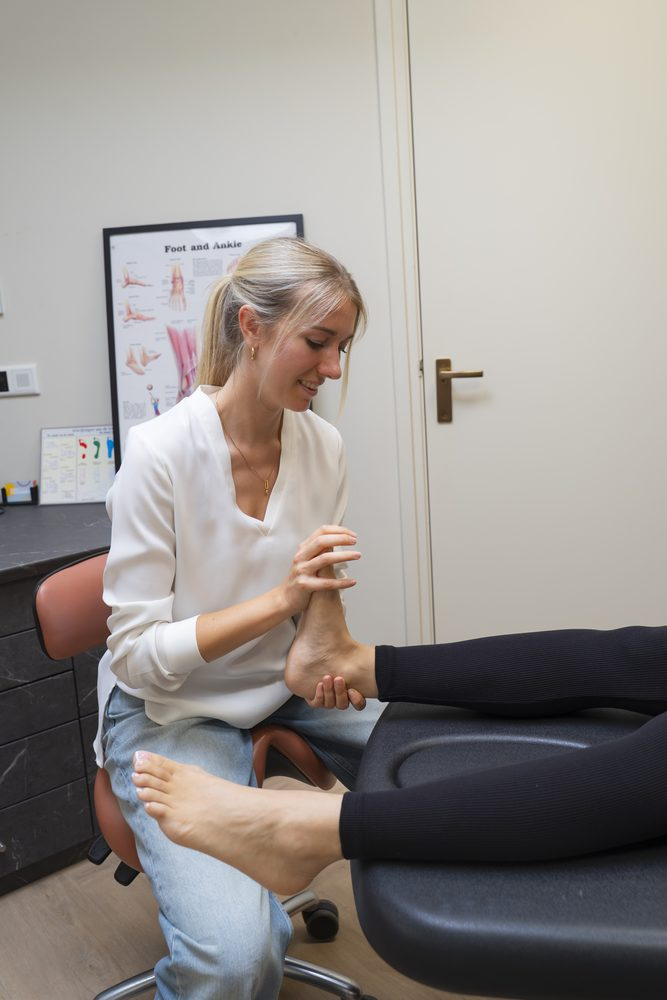
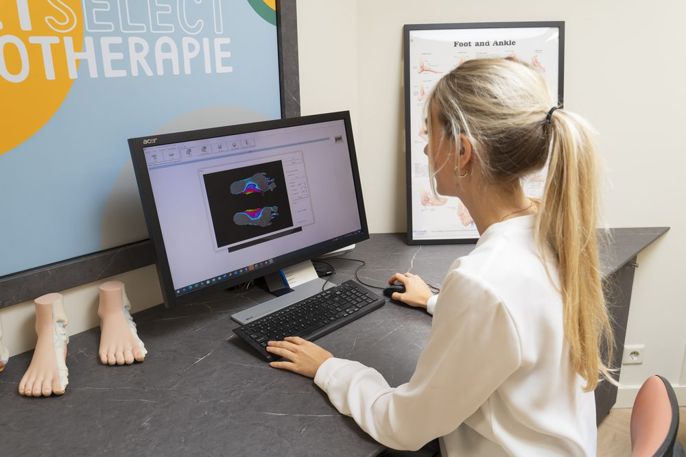

Het lichaam als geheel
Wij bekijken het lichaam als geheel en streven naar fysieke en mentale gezondheid. Het onderzoek is daarom uitgebreid: alle aspecten van beweging, pijn en belasting komen aan bod.

Grondig & persoonlijk
Een goede behandeling begint met een grondig onderzoek. Met geavanceerde meettechnieken brengen we uw klacht tot in detail in kaart.

'In-shoe' drukmeetsysteem
Met dit driedimensionale meetsysteem meten wij de bewegingen van uw voeten en de drukkrachten onder uw voeten. Zo kunnen we goed beoordelen of een correctie nodig is.
De meerwaarde van dit meetsysteem is dat er tijdens het lopen rechtstreeks in uw eigen schoenen kan worden gemeten, met of zonder inlegzolen, in elk type schoen. Zo beoordelen we uw looppatroon precies zoals het zich in de praktijk voordoet.

Verbeterde techniek
Deze techniek biedt een grotere precisie dan andere methoden, doordat in één keer het hele samenspel van schoen, inlegzool en manier van lopen kan worden beoordeeld. Zo bepalen we gericht of er iets moet worden aangepast aan het schoeisel en/of de inlegzool, om uw klachten te verminderen.
CADCAM technologie
Dankzij deze grensverleggende CADCAM-technologie meten wij uw voeten driedimensionaal en vervaardigen we uw zolen digitaal en computergestuurd, nauwkeurig en vaak dezelfde dag nog leverbaar.

Goed om te weten
Onze aanpak
Het onderzoek start met een uitgebreide anamnese. Tijdens dit gesprek lichten we uw klacht(en) uit en informeren we u over het vervolg van het onderzoek en eventuele kosten.

Wij bekijken het lichaam als geheel en streven naar fysieke en mentale gezondheid. Het onderzoek is daarom uitgebreid: alle aspecten van beweging, pijn en belasting komen aan bod.

De podotherapeut bekijkt de stand van uw gehele lichaam, onderzoekt uw bewegingen en specificeert de klacht(en) door middel van testen, inclusief werk- of sportgerelateerde bewegingen en schoenslijtage.

Bij VoetSelect Podotherapie maken we gebruik van een 'in-shoe' drukmeetsysteem voor een uitgebreide loopanalyse en een 3D-scan van de voeten, voor nauwkeurig aangemeten podotherapeutische zolen.
Maak een afspraak voor een uitgebreide anamnese en onderzoek op maat.